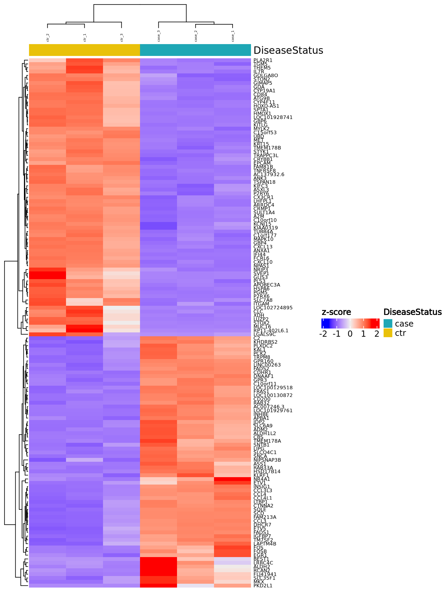

RNA-seq DGE analysis using DESeq2 with (unespecified) design, defaulting to: ~
RNA-seq DGE analysis using DESeq2 with (unespecified) design, defaulting to: DiseaseStatus
Contrast 1:
DiseaseStatus_ctr_vs_case
MA/Volcano plots
Top 100 differentially expressed genes
ID
Image
logFC
p-Value
Adjusted p-Value
ID
Image
logFC
p-Value
Adjusted p-Value
CCL3L3
-5.12
5.10e-185
7.57e-181
INSIG1
-3.84
3.84e-115
2.85e-111
CXCL10
6.53
3.20e-111
1.58e-107
STARD4
-2.66
1.59e-104
5.92e-101
SCD
-4.36
4.06e-99
1.21e-95
CCL4
-5.24
2.94e-95
7.27e-92
CCL3
-4.95
2.57e-93
5.45e-90
GPR160
-3.27
3.02e-92
5.60e-89
MSMO1
-2.72
9.81e-91
1.62e-87
CYP51A1
-2.42
9.94e-90
1.47e-86
CX3CR1
3.97
4.13e-86
5.57e-83
LSS
-2.98
1.27e-79
1.57e-76
FDFT1
-2.27
1.90e-78
2.17e-75
C10orf10
3.59
3.23e-75
3.42e-72
TMEM178B
3.30
1.45e-73
1.44e-70
ACAT2
-2.53
8.90e-72
8.25e-69
IDI1
-2.56
1.39e-71
1.21e-68
SULT1A4
3.12
2.46e-71
2.03e-68
CRYBB1
3.91
1.04e-69
8.12e-67
GM2A
-2.36
2.11e-69
1.56e-66
MARCKS
-1.70
3.02e-69
2.13e-66
CDHR1
-3.26
1.32e-68
8.89e-66
LDLR
-2.41
5.51e-68
3.56e-65
FDPS
-2.51
3.41e-67
2.11e-64
AP1S2
-1.79
4.15e-66
2.46e-63
CLU
2.85
7.18e-66
4.10e-63
FLNA
2.50
1.40e-65
7.72e-63
LINC00263
-4.04
9.31e-64
4.94e-61
TXNIP
2.65
1.21e-60
6.21e-58
UCHL1
2.61
1.00e-59
4.95e-57
CCL4L1
-4.63
1.76e-59
8.44e-57
IFI44
5.79
2.17e-59
1.01e-56
IDH1
-2.25
9.83e-59
4.42e-56
HMGCS1
-2.27
5.49e-58
2.40e-55
SQLE
-3.37
7.08e-57
3.00e-54
B4GALNT1
1.89
3.68e-56
1.52e-53
GRHL3
2.93
4.87e-55
1.95e-52
DHCR7
-3.38
5.92e-55
2.31e-52
LGR4
-2.92
8.60e-55
3.27e-52
FAM213A
-3.42
1.73e-54
6.43e-52
ACADVL
1.91
2.50e-53
9.05e-51
P2RX1
-2.23
7.85e-51
2.78e-48
PSMC4
1.98
7.57e-49
2.61e-46
PHYH
-2.24
1.67e-48
5.63e-46
KRT15
5.98
8.11e-47
2.67e-44
SC5D
-1.84
1.18e-46
3.81e-44
SECTM1
2.85
6.33e-46
2.00e-43
FADS1
-3.64
7.84e-46
2.42e-43
SERPINI1
-1.93
1.52e-45
4.59e-43
PSMD3
1.66
2.05e-45
6.10e-43
LOC100130872
-3.00
8.55e-45
2.49e-42
ABCB6
2.18
1.40e-44
3.98e-42
STON2
3.19
1.61e-44
4.50e-42
MPC1
-1.97
4.54e-44
1.25e-41
AC007246.3
-3.79
2.38e-43
6.42e-41
MVD
-2.61
2.53e-43
6.71e-41
OAS3
-2.58
2.75e-43
7.17e-41
PECAM1
-2.19
5.92e-43
1.52e-40
PSMC3
1.54
8.33e-43
2.09e-40
ACSS2
-1.83
1.43e-42
3.55e-40
CCDC86
1.55
1.61e-42
3.92e-40
FECH
-1.56
1.75e-42
4.18e-40
RHBDD3
2.10
1.91e-42
4.50e-40
SPNS2
2.71
6.86e-42
1.59e-39
HSD17B7
-1.95
3.55e-41
8.11e-39
NNT
-1.27
7.27e-41
1.63e-38
GLA
2.32
9.26e-41
2.05e-38
PCYOX1
-1.64
1.39e-40
3.03e-38
HMGCR
-1.71
1.49e-40
3.20e-38
SERPINE2
-1.97
2.46e-40
5.21e-38
PSMD2
1.86
3.98e-40
8.32e-38
CTSD
1.54
2.82e-39
5.82e-37
RRP12
1.67
3.05e-39
6.20e-37
NBEAL2
1.47
3.35e-39
6.71e-37
NRN1
-1.84
4.01e-39
7.93e-37
GGT1
1.41
4.67e-39
9.11e-37
FADS2
-3.88
5.32e-38
1.02e-35
SLCO4C1
-3.60
4.34e-37
8.26e-35
USP5
1.54
1.50e-36
2.83e-34
WSB2
-2.39
1.71e-36
3.17e-34
TRPM8
-3.18
2.99e-36
5.47e-34
STXBP1
-2.43
3.26e-36
5.90e-34
HMOX1
3.22
3.67e-36
6.56e-34
ABHD2
1.34
4.46e-36
7.89e-34
RRAGD
-1.54
1.36e-35
2.38e-33
CD58
-1.74
3.48e-35
6.00e-33
PSMD4
1.54
6.47e-35
1.10e-32
SEPT1
1.31
8.86e-35
1.49e-32
GBP1
2.24
9.92e-35
1.65e-32
MET
3.48
1.26e-34
2.08e-32
SOD1
1.49
1.85e-34
3.02e-32
GOT1
-1.31
3.01e-34
4.85e-32
RPS6KA2
-2.22
3.92e-34
6.25e-32
GBP4
3.95
4.81e-34
7.60e-32
UFD1L
1.94
5.95e-34
9.30e-32
C16orf93
2.37
8.78e-34
1.35e-31
GJA1
2.17
8.81e-34
1.35e-31
SLC39A8
-1.31
1.27e-33
1.92e-31
TM7SF2
-3.56
1.29e-33
1.92e-31
SLC6A6
1.96
1.29e-33
1.92e-31
ID
Image
logFC
p-Value
Adjusted p-Value
Heatmap DE genes (FDR 0.05, |log2FC| 3)

(Page generated on Mon Mar 4 17:17:58 2024 by
ReportingTools
2.42.2 and
hwriter
1.3.2.1)